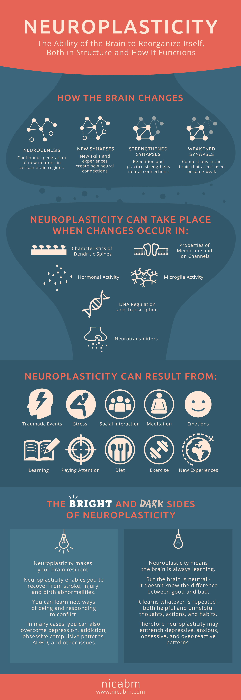

Neuroplasticity is the theory that the brain is not static, instead it is malleable. Our brains have the ability to learn new things and continues grow connections everyday. Another interesting fact is that simply knowing that your brain is flexible can helps you put more effort into understanding and overcoming challenges. This is especially helpful in the learning environment for students to know that their lack of knowledge or skill does not necessarily mean that they can’t pick up a new subject. Sometimes an aptitude is an attitude.
A Growth Mindset is the practical side of Neuroplasticity. It is the active self-talk we do to ourselves all the time when we face challenges. A growth mindset acknowledges the challenges and helps you move past it. Mistakes and failure are less of a deterrent to success. A growth mindset focusses on embracing challenges, encouraging effort, believing in possibilities ad being nurturing to self and others.
Some of the ways I can tap into the principles of neuroplasticity with a growth mindset for my own learning is by taking time to reflect on my learning journey by identifying the hard the bits that need more attention. The second is practicing – to get into the habit of practicing code problems every day – especially algorithmic problems. The third is to use my design aptitude to see applications and associations and use cases for the code.
I found this infographic which sums up neuroplasticity pretty well.
